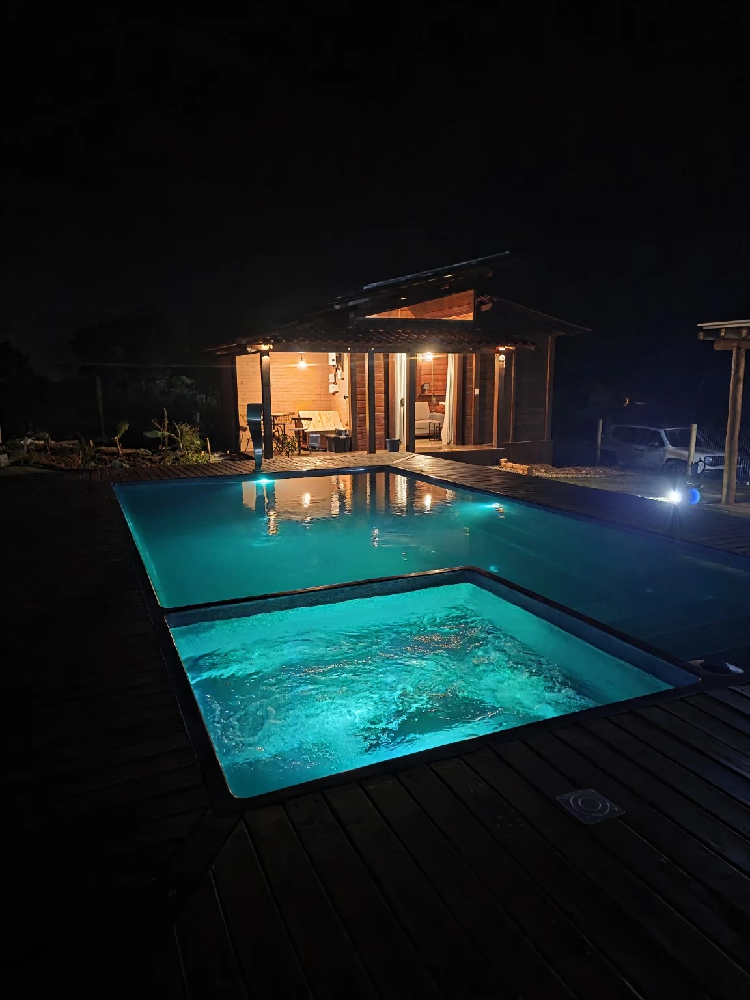
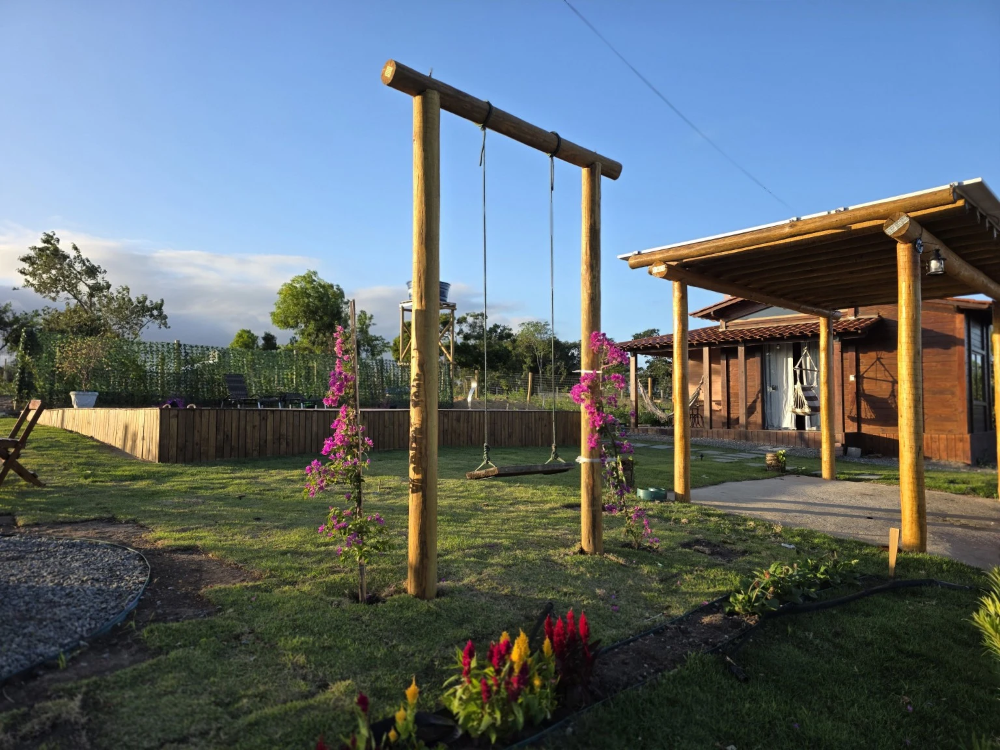
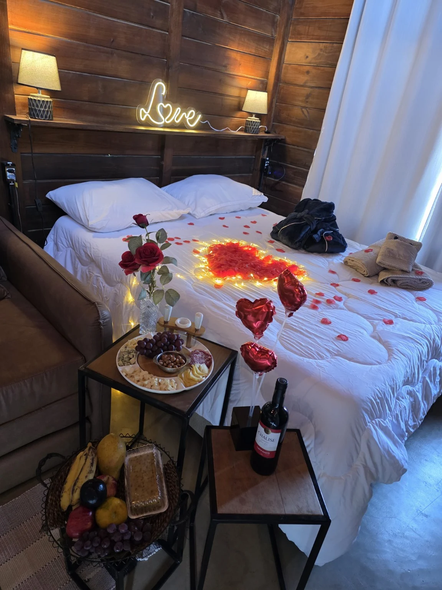
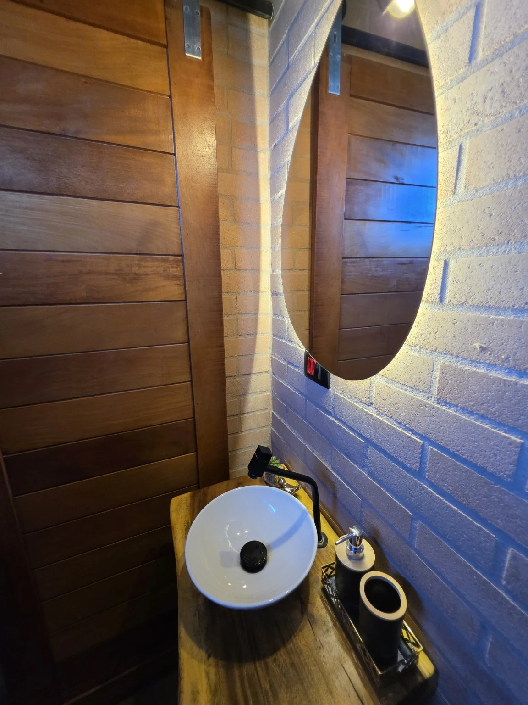
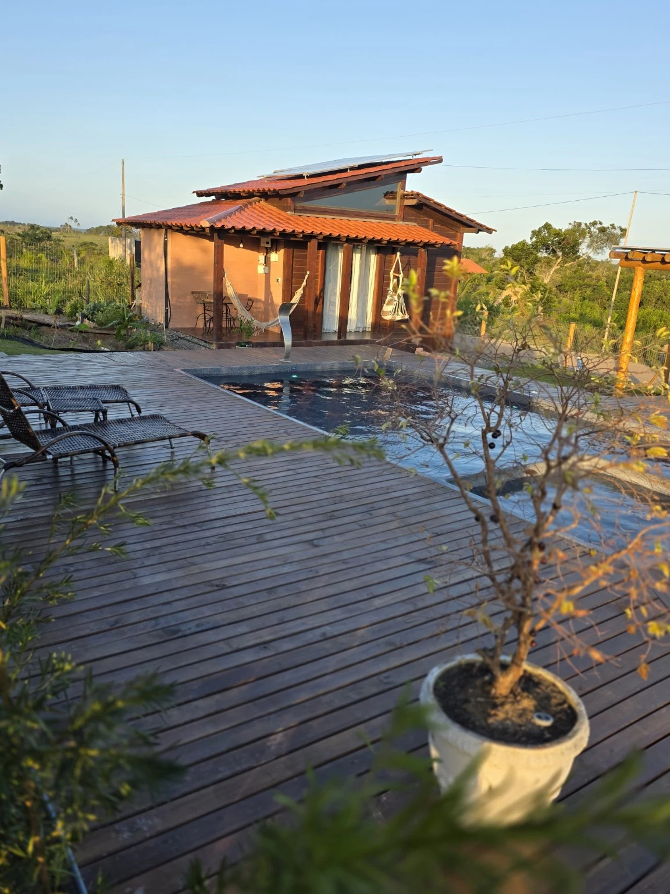
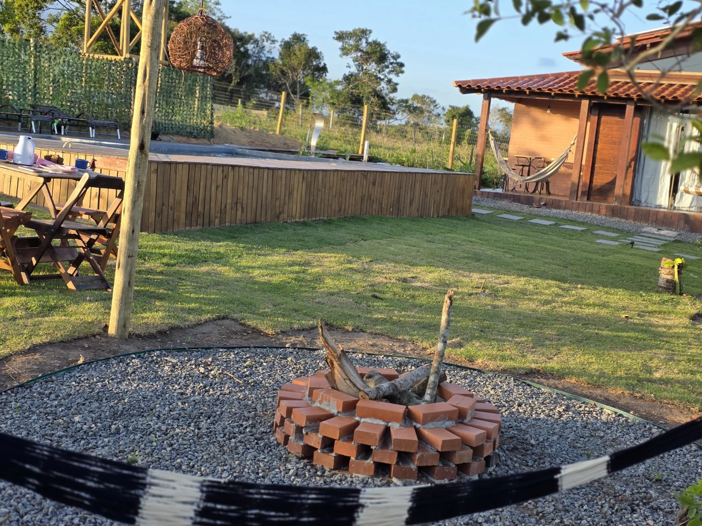
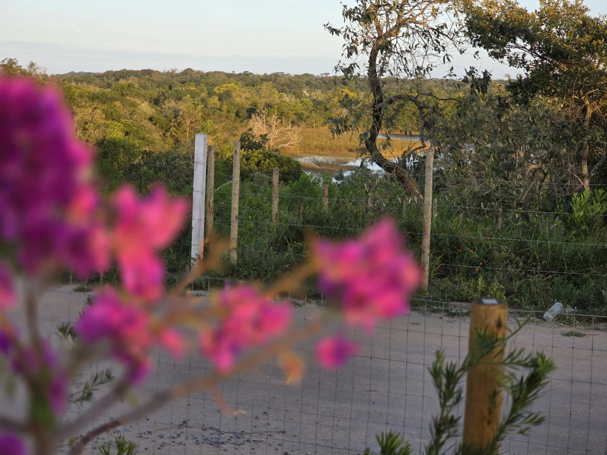
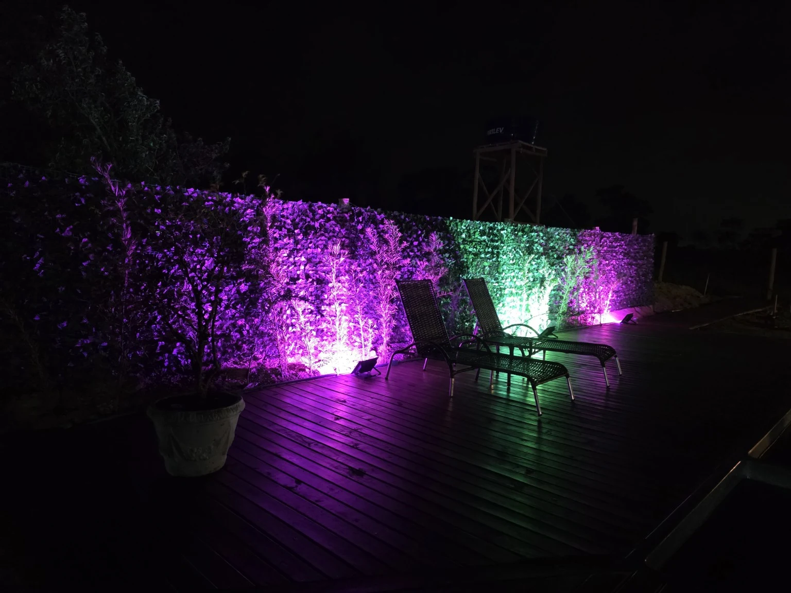
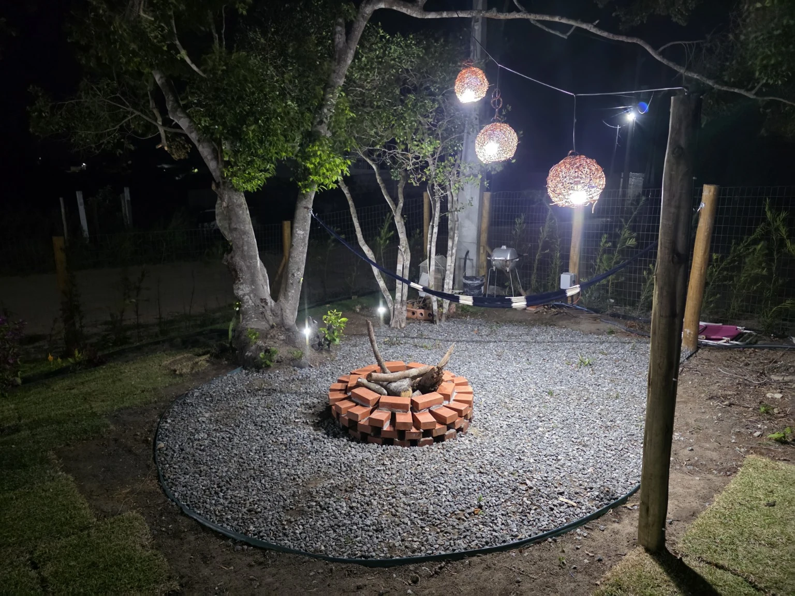

Piscina aquecida privativa + Spa
Ville Signature
Piscina aquecida, spa e um terreno exclusivo. Um refúgio criado para vocês desacelerarem e aproveitarem o tempo a dois.
Consultar disponibilidade →O tempo desacelera
quando vocês chegam.
Aqui, a experiência começa pela privacidade. O terreno é exclusivo para vocês: manhãs cercadas pelo verde, piscina aquecida para entrar quando der vontade e um spa para prolongar a noite sem pressa.

Água aquecida
do dia até a noite.
A piscina aquecida e o spa ficam dentro do espaço privativo do chalé. Durante o dia, o deck convida a aproveitar o sol; à noite, a iluminação transforma a área externa e cria um ambiente reservado para dois.

Seu espaço.
Seu ritmo.
O Ville Signature ocupa uma área externa exclusiva, com jardim, balanço, redes e espaços para descansar. Aqui vocês não dividem a área de lazer do chalé com outros hóspedes.
Conforto nos
pequenos detalhes.
O chalé reúne o que vocês precisam para aproveitar a estadia com autonomia e conforto, sem tirar o foco do que importa: o tempo juntos.
Um chalé preparado para dois.
Madeira, luz quente e detalhes românticos criam uma atmosfera acolhedora. O espaço interno foi pensado para uma estadia confortável e intimista, com enxoval, cozinha equipada e banheiro privativo.


Mais que uma hospedagem,
um espaço para aproveitar.
O lado de fora faz parte da experiência: piscina, deck, natureza e fogo criam diferentes momentos ao longo da estadia.





O essencial,
sem complicação.
EstadiaAté 2 hóspedes · 1 cama de casal
HoráriosCheck-in 15h · Check-out 11h
PetsPequeno porte são bem-vindos
LocalizaçãoSetiba Ville · Guarapari, ES
Praias7 min de Setiba e Santa Mônica
Natureza5 min do Parque Paulo César Vinha
Alguns dias para
lembrar por muito tempo.
Escolher as datas →Quando vocês
querem vir?
A consulta é enviada pelo WhatsApp. Confirmamos a reserva após verificar a disponibilidade.
Reservar pelo Airbnb ↗